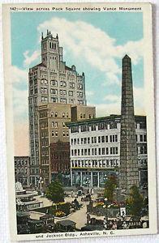

Native American trails guided settlers tohis site, wher in 1793 the Buncombe County Court placeed the first courthouse, prison and stocks. With the opening of the Buncombe Turnpike in 1827, this public square became a crossroads for stagecoach travelers and a gethering place for drovers who herded cattle, hogs and turkeys to markets farther south.